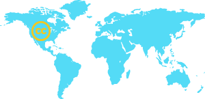
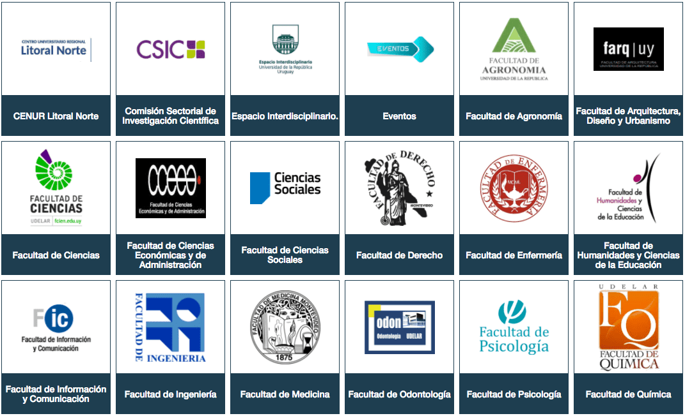

Lodun yi, a n foju si awon “itan ti o fowotoni” – awon ise agbese kaakiri agbaye ti o Ifowotoni eniyan ni anfaani lati odo CC. Iwọn data si se Pataki amon awon commons se pataki ju awọn nọmba lo. A ma safihan bii oro, asa ati arọwọto tii commons jeki ile aye gbogbo eniyan dara. Lodun yi, Ipo awon Commons fi bi ifowosowopo ati imore sen daari awon commons ati awon agbegbe re, o si tun se iwadi awon nkan ti o ṣeeṣe ti a baa n pin ati asopọ ti ara ẹni laarini awon oludasile kaaakiri araaye bi won sen pe arawon si agbegbe awon ti wo n pin nkan. Commons je ise ajosepo gbogbo agbaye, ni ile aye ti o je pe gbogbo nkan ti a n ko tukalẹ. Nisin ni lilo imo ati asa see patati ju. A ni lo awon commons, yèkoro awon commons ati awon olùkópa re se pataki gan nisin yi, a dupe lowo awon to n ba wa se agbekale re. Ni asowopo pelu awon araa wa kaakiri agbaye, a ti toka awon enijan ati ise ti o kani, ti o fowotoni, ti o si seni laafani. Inuwa dun lati pin awon itan yi, a si lero pe o ma je awokose fun re lati sese re ni ona ti o si sile, ti o ni ajosepo ti o si ni ifimore han.. E seun pupopupo, fun ibasepo yin si commons. Pelu imore, Ryan Merkley, Oludaari, Creative Commons @ryanmerkley
E kaabo si ajodun ododun awon ẹgbẹ Commons agbaye tii Creative Commons dasile – Iwe Ipo awon Commons
SOTC n sawari aṣayan imo ati ise àtinúdá jakejado ti o wa lofe labe iwe-ase. Jakejado iwe yi, a yo fi bi ise awon commons ti po, to o ti dagbasoke ni odun yi, ki o si Ṣawari ipa ti awọn Commons n ṣe lori asa wa.
Ni itọsọna ti SOTC ti o šaaju, a ti sakitiyan lati ripe a gbiyanju lati se idiwon ati riroyin fun data -fun apeere, oye awon ise ti o ni iwe-ašẹ ti o wa larọwọto gbogbo eniyan, ipin ọgọrun iwe-ašẹ CC kaakiri orisirisi ise, iwọn didun awon ise ti o ni iwe-ašẹ CC, ti o si wa larowoto gbogbo eniyan nipasẹ pin pin lori pẹpẹ lori ero ayelujara, nibi ti awon irinse ofin wa ti wopo. Data naa si w nibe, amoo lodun yi, a ti ri itesiwaju pupo: Etò CC titun setan lati mu ki commons dasi (kiin se pe ki o po si), nitori na lasen foju si awon itan ati awon eniyan to wa leyin àtinúdá ti commons naa.
Awon ise ti o ni iwe-ase Creative Commons
2016
1,204,935,537
2015
1,118,900,000
2014
882,000,000
2010
400,000,000
2006
140,000,000
Background: screenshot from “The Growing Commons” Creative Commons website is licensed as noted here
65
ti Creative Commons ti o n sise labe awon iwe ase “Asa ofe”
Agbekale iwe ase ni iru kan n kan :
 CC0: 6%
CC0: 6%
Awon Irinse ašẹ àkọsílẹ Miran: 2%
 CC BY: 20%
CC BY: 20%
 CC BY-SA: 37%
CC BY-SA: 37%
 CC BY-NC-ND: 14%
CC BY-NC-ND: 14%
CC BY-NC-SA: 13%
 CC BY-NC: 6%
CC BY-NC: 6%
 CC BY-ND: 2%
CC BY-ND: 2%


Museumu ti Metropolitan of Art ni New York fi ise 375,000 sile sinu ami àkọsílẹ nipa CC0
Apapọ awon ise ti oni ase àkọsílẹ ti a si lami CC

Foto agbetele: “Southern Gardens” lati owo Paul Klee (omo Germani (ti a bi ni Switzerland), Münchenbuchsee 1879–1940 Muralto-Locarno) lati owo Museumu Metropolitan ti Art ni ami àkọsílẹ nipa CC0

Kaakiri Agbaye
- African Storybook Initiative (Africa)
- Coutinho Collection (Senegal, Guinea-Bissau, Netherlands, France)
- Horison (Indonesia)
- Dr. Amin Azzam (United States)
- Maya Zankoul (Lebanon)
- Geonet (New Zealand)
- Colibri (Uruguay)
- The British Museum and Sketchfab (United Kingdom)
- UNIR Open Educators Factory (Spain)
- IQRA University (Pakistan)
- Datos El Salvador (El Salvador)
- OpenStax Physics (United States)
Foto agbekale: Black Marble – Asia and Australia lati owo NASA Goddard Space Flight Center ni iwe ase CC BY 2.0

Ni continenti ti o je pe ite iwe pese iwe rampe in ede Africa, African Storybook initiative pese ona si egbegberun iwe itan to ni foto fun ikawe awon omo keekeekee.

Aworan lati owo Wiehan de Jager, African Storybook Initiative ni iwe ašẹ CC BY 3.0
African Storybook initiative n sise pelu awon ile ise ati awon eniyan lati dẹrọ itewogba awon iwe itan ati irinise webusiti fun awon eniyan lati dasile, se itunmo won. Titi doni, ipilẹṣẹ yi ti pese iwe itan ni ede Africa merinleladorun pelu afowosowopo awon alabašepọ ogbon kaakiri Africa. Ọpọ ise agbese ni o n lo websitu ati awon iwe itan ibasepo awon egbe African Storybook project. Akoonu ti o see tunpo lo fa iwuri fun Global African Storybook Project, ti o se itunmo awon itan na si ede miran. Ni osu September 2016 ipilẹṣẹ na ni iwe itan ogorun meje o le ni ogbon ati itunmo ede egberun meji o le ni ogorun meje ati adota. Laarin odun meji pere, iwe itan 636,803 ni won ti download pelu apapọ alejo egberun merin o le ni ogorun mejo ti o si jewipe egberun meji o le ni ogorun mejo alejo je alejo alakoko. Awon Global African Storybook Project tip ese itunmo ede ogorun merin o le ni ogota ni ede merindilogbon. Laarin ogbon ati ogorin iwe itan ni won tit e fun orisirisi siiti omowe ati olowo.

Akojo po foto 752 ti Professor Roel Coutinho ni orisirisi aworan ile aaye ni igba ogun, pelu ijo, ile iwosan ati awon egbe onijagbara PAIGC.
Foto Agbekale: Parti igbeyawo ti Francisco Mendes lati owo Roel Coutinho nipa Commons ti Wikimedia ni iwe ase CC BY-SA 4.0
Professor Roel Coutinho se itore foto 752 ti o je foto ti iṣẹ oogun re lati odun 1973 – 1974 fun awon commons. Won ya awon foto ni opin odun ijagbara fun ominira ti orileede Senegal ati Guinea-Bissau lodi si ofin amunisin ti awon Portuguese. Awon foto yi, ti o wa ni ile ìkàwé ti African Studies Center ni Leiden, Netherlands fun wa ni iwo firi sinu apa kan ti itan Africa ti awon eniyan o kin so nipa. Won ti gbe iseyi si ori Commons ti Wikipedia lehin afihan ni Avignon, France ni 2013. Metadata re wa ni ori Commons ti Wikipedia won si pin laabe iwe ase CC BY-SA.
Magazine ti Horison ni Indonesian ati CC Indonesia lati so iwe di ayelujara oro 264 ti o sele tipe lati odun 1960-titi do ni, won si fe fi eyi sinu iwe eto eko ile iwe.

Horison Magazine, ti osu December 1977 lati owo Horison Magazine ni iwe ašẹ CC BY-SA 4.0
CC Indonesia ti n sese lati odun 2013, amo ni odun yi, abasepo ti Horison je I ise won je awokose ninu ise awon ile ise asa. Awon ebge CC Indonesia sise pelu awon o n kowe agba ti Wikinedia lati ko won bi won ti le fi awon iwe won si ori Wikipedia. Won tun ko won ni itunmo iwe ase CC BY-SA, iwe ase ti o funi laye lati lo oruru ise. Awon egbe naa ma tesiwaju pelu ise won pelu ile ise Horizon.
Ise CC Indonesia fi han pe ajosepo pelu awon ile ise asa se kpataki ninu idagbasoke ti commons, ati pea won oluranlowo die rampe le se ipa tiwon lati se itoji asa wa. Ise yii je ise osu rampe amoo ni osu December, odun 2016, won ti woo len me 750,000 times.

Gege bi ara ise ifafiti won, awon akeko ti oniṣẹ oogun ti Dr. Amin Azzam saatunse awo n aroko Wikipedia ti o ni iwe ase CCti won dey ti wo le n me millionu mejilelogun laarin odun kan.

Dr Amin Azzam lati owo Kathleen Krushas ni iwe ašẹ CC BY 4.0
Foto agbetele: Editing Wikipedia for medical school credit – 2016 poster lati owo Amin Azzam, Lane Rasberry, James Heilman, Kingsley Otoide, Jack McCue ni iwe ase CC BY SA 4.0
Pelu iranlowo ti Wiki Education Foundation, Azzam seda ise kan fun ile eko UC Berkeley-UCSF Joint Medical Program fun awon akoko oise oogun ni iwuri lati se atunko awon aroko Wikipedia lori awon akole ti o da lelori ilera. A sapejuwe ipa ise awon akeko yi ni inu aroko ti oruko re n je “ WIdi ti o ye ki awon akeko ise oogun gba Wikipedia moora: Ise ase kagba ti awon Akeeko Ise Ogun lori Aroko Wikipedia fun kirẹditi eko ni One School,” eyin ti won pada te niAcademic Medicine, iwe irohin ti o n ko nipa ilera.Awon aroko ileyi je ara awon ti awon eniyan woo ju lori Wikipedia. Awon eniyan wo awon aroko ti awon akeko Dr. Azzam ko lee n me millionu 1.1 laarin osu meji ti awon akeko yi se atunse awon aroko naa. Awon aroko na ti o to mejilelogoji ni won ti wo le n me millionu mejilelogun. Ise Azzam ti se idasile ise kan ti o da lee lori eko ti o shi si gbangba, eyi ti o fa ki awon ise titun dapo moa won Commons nipa ese Wikipedia.

Oluyaworan Lebanese ti o gbajumo, onkowe apanilerin ati onkowe Maya Zankoul se itankale ifiranṣẹ ti commons nipa ti art, studio ti design, ati ile ise video ti n je wezank.

Ideri Amalgam apa keji lati owo Maya Zankoul ni iwe ašẹ CC BY-NC 3.0
Iwe akoko ti Zankoul, Amalgam, ri atejade ni 2009 labe iwe ase CC BY-NC. Iwe na jade lati iwe apanilerin re lori internet ti o n ye igbe aye, ise ati art wo ni ilu Beirut ati bebee lo. Ise Zankoul fi owokan ajo se laarin asa pelu iyaworan. Iwe re titun, Beirut – New York, ni a te jade ni autumn yi.
“Mo rip e awon iyaworan mi jeki awon eniyan ri nkan lona. O un je ki won jade ninu ipo iṣe.”

Ni New Zealand, iji ile ati awon ajalu adayeba rorun lati mojuto nitori data ti o wa ni gbangba ti won pese lati owoGeoNet, Webusiti Jiolojikali elewu ti New Zealand.
Foto agbekale: Inland ati Seaward Kaikouras ati Clarence River mouth, Marlborough, New Zealand, 28 Oct. 2009 lati owo Phillip Capper iwe ase CC BY 2.0
GeoNet adopted a CC BY license in order to provide crucial, open information and quick response to earthquakes, volcanic activity, and tsunamis. Its real-time CC BY-licensed and open format data is now reused every day for emergency management, research, industry use, and by the public. GeoNet has become a core tool for global positioning systems, measuring instruments, geotechnical consultancies, local and central government, as well as for national and international universities and research organizations. In 2016, It recorded over 32,000 earthquakes and has changed the way that the public learns about and understands earthquakes through its open format. On 14 November 2016, the day of the Kaikoura 7.8 magnitude earthquake, there were 250 million hits to the site by third party apps – people around the world wanted to know the strength of the earthquake and what that meant for them. Geonet sent out 206 million advisories that day through its app, website, and social media sites. Due to the reach of Geonet, there is increasing information on a variety of safety protocols like where one must move to avoid tsunamis and advice about what size after-shock to expect. Worldwide, new knowledge and research has been developed through legal reuse of this licensed data.

Ile ipamo ti Universidad de la República Colibri je eyi ti o un gboro ise iwadi eko ni Uruguay o si tun gboro imo ti pipataki ti awon iwe ase ti o si sile.

Colibri: Communities lati owo Universidad de la República ni iwe ašẹ CC BY-NC-ND
Universidad de la República ni ifafiti akọkọ ni Uruguay o si je ifafiti ofe ati gbogbogbo fun gbogbo akeko. Awon oludaari ise Colibri lero pe iriri iyi ma je ki ifafiti naa ma beri sini lo awon iwe ase bii CC BY-NC-ND tabi CC BY-SA ti o ni ominira. Ni 2016 nikan, akojọ ifafiti na ni afikun titun 6,132, ogota afikun titun, awọrọojulówo 3,012,107, ati gbigba lati ayelujara 954,475.

Museum ti British fi awoṣe 128 le fun Sketchfab, pese abaso sepo pelu akojo ti museum.

Aworan oju fun 3d model: Ori olokuta ti Amenemhat III by Musiọmu Britico nipa Sketchfab ni iwe ašẹ CC BY-NC 4.0
Foto agbetele: ‘Black’ Pyramid of Amenemhet III lati owo Vincent Brown ni iwe ase CC BY 2.0
Ni afikun si iwe ase CC, pepe tite akoonu 3D Sketchfab je ki o roorun fun museum na lati pin ipo lori social media ati WordPress. Museum ti British tun ni akojopo ere, ti o wa lati ere Ramses II si awoṣe museum naa fun ara re. Ni tori iwe ase CC BY-NC, o roorun lati gba awon faili yi, a shi le pin awon ise naa ni orisirisi ona. Museum naa ti upload ogorun ise ti on ni wiwo 200,000 ati downloads 20,000.

Universidad Internacional de la Rioja se ifilọlẹ Pepe awon olukọni gbangba fun awon olukọni agba lati ko ni pa eto eko ni gbangba.

Fabio Nascimbeni ni o fi aworan yi sile, UNIR ni iwe ašẹ CC BY 4.0
UNIR je ifafiti ti o wa 100% online ti a de dasi le ni Logroño, Spain ni 2009. Pepe awon olukọni gbangba UNIR, ise agbase lati owo oludari ti Knowledge Transfer & Technology, fe tun bi awon oluko ile eko agba se n lo gbangba ni ise eko won. Ni odun rampe, UNIR ti ni awon omo ile eko 38,900 lati orileede 79 ti won ti kawe gboye o si tun ti pese kilasi wakati 1,350. O gba lekitura egberun si se kaakaakiri agbaye ati awon amoye ogorun marun.

Ni Ifafiti ti IQRA ni ilu Karachi, Pakistan, Iwe Irohin South Asian Journal of Managementje okan ninu awon iwe irohin to tayo ju lo kaakiri agbaye nipa ScholarOne ti Thomson Reuters.
Foto agbekale: IQRA University Main Campus lati owo Hassan Dar ini iwe ase CC BY-SA 3.0
Lilo Creative Commons ti jeki awotẹlẹ oododun meji gba irise oniruuru ni pa ede, ẹsin, asa, oṣelu, imọ-ẹrọ ati oro aje. O ti ni iwe ase CC BY-SA-licensed lati 2014 won si ti toka si le n me marundilogorun lati 2012. Itewogba iwe ase naa je ki o rorun fun awon awadi eko lati jumosise lori orisirisi imo eko. Lodun yi, iwe na ti gba ami eye nla lati owo ijoba Pakista o si ti gbe igbese lati dara po mo OASPA, egbe Open Access Scholarly Publishing Association ti o gbajumo.
“EIC Muhammad Imtiaz Subhani ati akowe agba Amber Osman, Managing Editor, Gbagbo ninu pinpin imo kaakaakiri. Creative Commons tip ese pepe lati daabobo ise imo eko ti SAJMS.”

Pepe data akokoko ti o si sile ti El Salvador, DatosElSalvador.org ri idasile lati owo awon ara ilu o de ni iwe ase Creative Commons.

Aworan oju fun Graduados Ingeniería, Maestría y Doctorado en El Salvador (2010-2014) lati owo OKFN El Salvador ni iwe ašẹ CC BY-NC 4.0
Lati 2014, DatosElSalvador.org ti te orisun data ogorun marun ti awon onibise aladani, awon akorohin, awon onise iwadi laarin awon miran. Ise gbese ti CC El Salvador ati Open Knowledge International El Salvador, DatosElSalvador.org ti kopa ni igbimo pupo bii ti Open Knowledge Day ni 2014 ati 2017 ni igba ti won lo open data ati iwe ase. Lodun yi, won mu ise naa fun aami ipa awujo ti Open Data Institute Open Data. Ni 2016, awon omo egbe na se itunmo awon iwe Sunlight Foundation, ti won gbe gbekalẹ ni PeaceTechLab ni Costa Rica, ati orisirisi iworan fun ilu Xalapa ati campus ti OAS.
Opolopo eniyan kaakakiri agbaye Iwe nka ti OpenStax

Ite oju screeni lati odo College Physics iBook by OpenStax ti o ni iwe aseCC BY 3.0
Foto agbetele: Seminar on differential equations and integration theory lati owo Milan Tvrdy je ise ti o ni iwe ase akosile nipa Public Domain Mark
OpenStax Physics image lati owo Rice University ni ase CC BY 4.0
Awon iwe na wa ni arowoto gbogbo eniyan. Omo ile iwe to o n ba lo OpenStax Physics – ma ni aafani lati wo awon aworan ti o wa.
Itan na si Pepe
A n sise pelu awon pepe ti ni akoonu latije ki o roorun lati ri, pin ati se ajosepo lori ise àtinúdá ati imo. Eyi je die ninu ise awon oludasile wa ati awon abanise wa ni 2016.


Fotographa Moe Zoyari ya, o si tun te awon foto ti o gba ami eye, awon foto nah fi awon Afghani han bi won se n tun aye won to lehin ogun.
Foto Itegbale: Iran lati owo Moe Zoyari ni iwe ase CC BY-NC-SA 3.0
Moe Zoyari je fotographa lati orileede Iran ti o n gbe ni Berlin, o si tun je producer ti multimedia ti a fi ise re han ni Newsweek, Time, ati Der Spiegel. Ki o to ko lo si Berlin lati Iran, o lo ojo merinlelogoji ni Afghanistan gege bii ayaworan pelu awon Ologun USA, nibi ti o ti ya awon Afghani bi won se n tun aye won to lehin ogun. O fi awon foto yii le lori 500px labee iwe ase CC; a ti fi awon foto naa han ni Marie Claire, o si je yege pelu ipo kini ti ere ije ti PDNedu. Olubori ohun-ẹyẹ Pulitzer Prize Kim Komenich tii yin fun imose re. Won ti wo awon foto re lori 500px lee me 44,000.
Spotlight: Awon Freeharmonic Orchestra
Awon olorin mejila kaakiri agbaye wa paapo lati ko orin ajoko “Freeharmonics ala koko”.

Aye akopo orin, the Freeharmonic Orchestra je egbe olorin mejila lati gbogbo agbaye. Steve Combs ati Simon Mathewson ni o dari re, Awon mejila yii bere si ni sise ni meta mta lori won orin won. Esin orin akopo je Freeharmonics (Vol. 1) iwe ase CC won ere ejo lowo meji ninu awon omo egbe na, eyi ti e le ri ni ibi.
“Mo ro pe nkan ti o tayo ju ninu oro yi ni peo n jeki awon eniyam kaakiri agbeye sise [FMA].”
Museum ti Art ati Design ni Hamburg bere pepe ti o wa online lati pese ona si awon ise ti o ni iwe ase 7,000 ti Art Nouveau ati foto aiye atijo ti Japan.
Foto Igbakale: Der Schauspieler Segawa Kikunojō III als Utsusemi, Blatt 3 aus der Serie: Die 54 Kapitel des Edo Violett lati owo Utagawa Kunisada nipa MKG Sammlung Online je ise ti o ni iwe ase akosile nipa CC0
Gbebe bi olubase ti Europeana, Museum ti Art ati Design ni Hamburg ni ju idaji millionu ise lati orisirisi art. Laipe yi, museum na si pepe ti o wa online lati fi akojopo aworan 7,000 fun gbogbo eniyan labe iwe ase CC0. Pepese awon aworan yi dapo mo ise museum yi “lati fun awon eniyan ti won se ise owo ati arts ni apere dun eko ati adako ki won le mu ki ise won dara dun awon onifioroweoro lagbegbe won.”
Spotlight: Maapu Iceland ti orundun ketadilogun
maapu Iceland ti orundun ketadilogun ti o salaye arokọ Wikipedia lori Iceland, eyi wa fa ki awon eniyan wo maapu yii gan ni igba ere boolu Euro 2016.

{kind=link}
A so maapu yi ṣoníka, a si tun gbesi ori Wikimedia Commons nipasẹ University ti Edinburgh Centre for Research Collections labe iwe-ašẹ CC BY, won tun wa fi salaye ìwé Wikipedia ni ede Gẹẹsi ati Germani lori orilede Iceland. Awon ti won ka ìwé Wikipedia yi pọsi ni igba ti won n gba ere boolu ifigagbaga Euro 2016, nigba ti awon ololufe ere boolu fe mo nipa ilu Iceland te iwe na ni ojo etadilogbon osu June) nigbati ilu Iceland naa ilu England lami meji si okan). Kaka ki o ma joko, didagun ni akojo University na, awon eyan ti wo maapu na ni igba millionu 3.4 lori Wikipedia.
Spotlight: The Multimedia Commons Initiative
Lehin ti Flickr fi metadata fun millionu 100 ti awon foto ati video re le (the YFCC100M dataset) awon oniwadi kaakiri agbaye ti lo lati ko ohun elo orisirisi.

Aworan oju fun aràwárí fun “model 3d” lati brauser YFCC100m. Fun Iwe ašẹ ti o wa lori aworan kan kan, ejowo e te wo esin ti o wa loju iwe yi.
Foto igbakale: “3D Hackerspace Berlin _MG_3817” lati owo BERLIN in 3D ni iwe ase labe CC BY 2.0
Ni 2014, Yahoo Labs ati Flickr fi Yahoo-Flickr Creative Commons 100 Million dataset ti o ni metadata fun aworan millionu 99.2 ati video 800,000 ti o wa lori Flickr labe okan ninu awon iwe ase CC. Lati igbana ni a ti abajoosepo t o n je Multimedia Commons Initiative
Spotlight: Importer ti Open Access ni ipa ese ti aworan Imọ-jinlẹ
Awon alaworan ti imo ijinle da Open Access Media Importer (OAMI) lati je ki aworan ti imo ijinle wa fun gbogbo eniyan.

Aworan oju fun Visualizing Complex Science lati owo ASAP Accelerating Science Awards Program ni iwe ašẹ CC BY 3.0
Daniel Mietchen, Raphael Wimmer ati Nils Dagsson Moskopp wa ninu Visualizing Complex Science . Awon yi lo da Open Access Media Importer (OAMI) sile, OAMI je ero ti o fa awon aworan yo lati aroko Open Access science. Titi do ni,ero yi to fi faili egberun metala si ori Wikimedia Commons won si ti loo ni aroko 135 Wikipeida ti geehisi ti won si ti woo ni e n me 3 million views. Visualizing Complex Science gba ami eye fun Accelerating Science Awards Program (ASAP), eyi ti o je sponsor ti PLOS.
Fotographa Samuel Zeller n lo aafani Unsplash platform lati ni akitiyan, sunkẹrẹ-fakẹrẹ, pin pin ati customa fin awon ise re.
Foto agbetele: Geneva Arena, Le Grand-Saconnex, Switzerland lati owo Samuel Zeller je ise ti o ni ami ase àkọsílẹ CC0
Onise foto gbogbogbo ti o n gbe ni Geneva, Switzerland, Samuel Zeller je okan inu awon fotographer ti o tayo ju ni agbegbe Unsplash. Ni inu iwe alakitiyan lori Medium (ti o tun ni iwe ase CC), Zeller pe akiyesi pe oun lo awo irinse ti o ni iwe ase CC fun odun pupo lai fun pada, titi o fi sawari Unsplash ti o fi wan fi awon foto re le lofe. Igba yi lawo eniyan wa moore gan; titi do ni won ti wo awon foto re lori Unsplash lee me millionu metaleladorin won sit tun download re ju en me 745,000. Ise re si ti gbeyo ni inu afihan Apple kan. Awon eniyan kaakiri agbaye da ise tuntun sile pelu awon foto re, awon ise yi je websiti, oju iwe album, foto itele ti iPhone App, ati iwaju iwe. Ni itori agbeyo yi, ise re n fa awon customer mora, awon customer yi ma ni ki o ya foto kan pato, sibe si awon eniyan ti o n ye awon ise re tip o si. Loni, yato si awon foto re ti o ni iwe ase CC0 lori Unsplash, o tun ni ise miran fun gbogbo eniyan ti wa lofe ti osi ni iwe ase CC BY.
“Ise foto mi gboro si, awon eniyan pupo n ri ise me, mo tun n ria won eniyan pupo, ise pupo ati customer pupo ju ti tele lo. Iwulo foto wa ni lilo re. Awon foto ti mo n file je apẹẹrẹ oun ti mo le se.
Spotlight: “Alike,” aworan rampe
Aworan rampe, ti o gba ebun ti o si ni agbekale ati iwe ase ti gbangba “Alike” ti ri wiwo le n me millionu 1.5

Aworan oju fun Alike short film lati owo Pepe School Land ni iwe ašẹ CC BY-NC-ND 3.0
<Daniel Martinez Lara ati Rafa Cano Mende lo sholudari “Alike”, won si seyi pelu apapo awon omo ile iwe ti won ti kawe gboye ti Pepe-School-Land. Linux ati Blender ni won fi ya aworan na. Won si ti sey ifilole aworan na ni ogunlelogorun ajodun o si ti gba ebun pupo.

Akorohun Scott Santens te ipo kan si ori Medium> ti o si kilo pe orisirisi eko ijinle AI ma to dipo millionu eniyan lenu ise.
Foto Igbekale: Image ne yearf Scott Santens lati owo Collision Conf ni iwe ase CC BY 2.0
Santens je olukowe ti o wa ni agbegbe New Orleans, osi ti kowe fun Boston Globe ati The Atlantic lori akole ti o da lalori artificial intelligence ati owo ise gbogbogbo. O ni awon eniyan ti o le ni 17,000 lori Medium, won si ka iwe ti o ko lori eko ijinle ti o ni iwe ase CC len mee 98,000. Iwe yi dara fun sisapejuwe bi computa se na asiwaju agbaye Le Se-dol ni eree Go, tabi “Super Ultra Mega Chess,” amo fn ikilo pea won eko ijnle yi ma ropo millionu eniyan lenu ise. E ni ominira lati kin and tun ipo na ko lede miran pelu attribution si Scott Santens.
Spotlight: Public.Resource.Org
Die lori egberun marun aworan ti ni iwe-ašẹ CC-BY nipa awon awon ile-iṣẹ ijọba Amẹrika, Public.Resource.Org je okan ninu awon ikanni YouTube ti o lo CC ju lo.

Aworan oju fun Stay Calm and Stay in the Cab! by PublicResourceOrg ni iwe ašẹ CC BY 3.0
Ile-iṣẹ Public.Resource.Org n ṣiṣẹ pẹlu awon ile-iṣẹ ijọba Amẹrika lati yi awon awonran, won si tun fi awon aworan yi si ori Youtube ati ile ipamo ero ayelujara ki awon araye le ri wo. Titi di ọjọ oni yi, ikanni PublicResourceOrg ti je wiwo ni die lori miliọnu Ẹtadinladọta. Aworan re ti o gbajumo ju wa lati Ile-iṣẹ Aabo fun Ihulẹ ati ilera, ti o sọ itan okunrin kan, ti o n wa ẹrọ itulẹ, idoti bo alakurin yi, won si gba alakunrin na silẹ

Atari eniyan pelu Mandible ati eeyin lati owo Onise 3D MacGyver je nkan ti won ti se atunse re fun agbegbe Thingiverse.
Foto igbatele: TriSkullQuadraClops Candy Dish lati owo infamousriz ni iwe ase CC BY 3.0
Onilo Thingiverse MacGyver lo da atari eniyan pelu Mandible ati eeyin ni 2012 o si pin ni lori pepe naa pelu iwe ase CC BY. Ni 2013, MacGyver she atunpo designi naa si Atari eniyan ti won pin si meji, ti o si ni mandible ati eeyin. Ni 2014, onilo LeFabShop mu ki designi yii roorun, o tun po si Atari ti won pe ni To Make or Not to Make. Ni 2-15, onilo OpenSourceClassroom ilopo designi na si TriSkull. Ni akotan, ni 2016 onilo infamousriz so TriSkill si Candy Dish.

Spotlight: StrangeZero
StrangeZero, je egbe olorin eniyan meji lati orilede Greece, se ifisile alubọọmumeejo ati Eps meji labe Jamendo labe iwe ase CC.

Aworan oju fun StrangeZero - Nanofly lati owo strangezero and Gregοry Cοlbert ni iwe ašẹ CC BY 3.0
Strangezero ri Jamendo gege bii oona lati kopa ninu aye orin ofe, eyi jeki awon eniyan mo ni pa Creative Commons licenses gege bii ona lati pin nkan. Awon ara Greek ri ise awon olorin yi, yon si fi awon olorin yi wan ni MTV Greece ati MAD TV, nibi ti won ti so pe Creative Commons wa ninu nkan ti o fa ti won fi yege. Titi do ni, awon eniya million meji lo ti wo orin StrangeZero lori Jamendo.
Eniyan egberun mokanla lati orilede mejilelogoji ni o kopa ninuEre eje Wiki Feran Ere 2016 lati se afikun awon foto t awon ere ati ile ini si commons.
Foto agbetẹlẹ: Wat Arun lati owo BerryJ ni iwe ase CC BY SA 4.0
{kind=link}
Wiki Feran Ere je ere eje ododun lati ya foot awon ere ati awon ile iní kaakiri agbaye sori Commons ti Wikimedia. Ere eje ti 2016 ni iyanju 277,365 lati owo awon eniyan 10,748 ni orilede mejilelogoji. Aworan ti o tayo ju je ti Ile ejo Berlin lati owo Ansgar Koreng labe CC BY.
,_160906,_ako.jpg){kind=link}
“Bi Wikipedia ba je itan agbaye, Wiki Feran Ere le je oju iwe ti o dara.”

O seun ti o pin
Iwe apejuwe State of the Commons ti odun yi so itan bi awon commons se tun wo asiko titun ti n moriwu. Ise ti o bere pelu idasile Creative Commons’ ni ẹdogun odun seyin ati idasile awon iwe-ašẹ CC yi lo gbe wa de bi, nibi ti awon iwe-ašẹ CC lapapo Commons ju bilionu 1.2 lo, orisirisi nka lo ni iwe-ašẹ yi, lati awon iwe eko, data ti o si sile, iwadi eko ati orin, ayaworan ati Iyaworan – ati bee bee lo.
Sibe, numba yi – billionu 1.2 – so die ninu itan yi. Nkan ti o mu ki ise yi seese ni ti awon eniyan ati ile ise kaakiri agbaye ba mu ki imọ won ati ise ise agbese àtinúdá ni larọwọto gbogbo eniyan, amoo ki won gba ojuse lowo awon to ti pin iwe owo won. Pin pin ni ibere gbogbo ise ti on ni iwe-ašẹ, amo abasepo ni opin re. Awon iwe-ašẹ kọọkan je ifiwepe lati sise paapo - lati kọ nkan. Commons je iṣe ti o ni agbara.
Tipe tipe ni itan CC ti je itan ti pinpin ise àtinúdá ati imo laarin awon eniyan kaakiri agbaye. Ni sinsin yi, itan agbegbe wa ni: awujo agbaye yi si ti tojo.
Agbara ati ikpa nla ti commons ni seese nitori agbara ati ise agbese àtinúdá ti a ri nibi. A lero pea won aṣayanlaarin iwe yi ma taana si nkan ti a ti gbese titi doni – ati nka ti oseese lojo waju.
A dupe lowo Google ati awon platformu CC orisirisi, awon, awọn alabašepọ, ile ise, ati awon eniyan lati awujo aaye ayelujara t won ti ṣojuuṣe fun iwe yi. Iwe ‘State of the Commons’ je sisenitori afikun yin – Ese pupo!
Lati igba ti <a target=”_blank” href=”https://support.google.com/youtube/answer/2797468?hl=en”>YouTube</a> kọkọ gba iwe-ašẹ CC BY fun awon olumulo re ni odun 2012, oye awon aworan labe iwe-ašẹ CC ti posi, o ti to miliọnu Ọgbọn. A le tun awon aworan CC BY se pelu irinse olootu YouTube, awon orin ti o ni iwe-ašẹ CC BY sit un wa lati baa won aworan yi lo.
Aworan oniwe-ašẹ CC <span class=”stat”> miliọnu Ọgbọn </span>
<a href=”https://www.youtube.com/watch?v=6KejBRUTUjA” target=”_blank”><img class=”alignnone size-full wp-image-1464″ src=”/wp-content/uploads/2017/03/stay-calm.jpg” alt=”” width=”600″ height=”391″ /></a><h6 class=”attribution”>Aworan oju lati <a href=”https://www.youtube.com/watch?v=6KejBRUTUjA” target=”_blank”> farabalẹ ki o si duro sinu oko akero!</a> nipa<a href=”https://www.youtube.com/channel/UCO9Q5_D6tItyoilmDogexng” target=”_blank”>PublicResourceOrg</a> ni iwe-ašẹ <a href=”https://creativecommons.org/licenses/by/3.0/legalcode” target=”_blank”>CC BY 3.0</a></h6>
A fe dupe lowo awon eniyan yi ati awon ile ise yi, fun atilẹyin won si iwe ‘State of the Commons’ ti odun yi. A dupe!
Idagbasoke dátà
Erin Simon, Google
Agnes Toth, Google
Brendan Hickey, Google
Pavel Nalivayko, Google
Gergely Orban, Google
Paul Haahr, Google
Ipa Itan
African Storybook Initiative je afikun Tessa Welch
Coutinho Collection je afikun Jos Damen
Horison je afikun CC Indonesia
GeoNet je afikun CC Aotearoa New Zealand
The British Museum and Sketchfab je afikun Alban Denoyel
UNIR Open Education je afikun Fabio Nascimbeni
Datos El Salvador je afikun Datos El Salvador
COLIBRI je afikun Jorge Gemetto
IQRA University je afikun Amber Osman
Maya Zankoul je afikun Naeema Zarif
OpenStax Physics je afikun Sonya Bennett-Brandt
Dr. Amin Azzam je afikun TJ Bliss
dátà ori Platformu ati Ayanlaayo
Joris Pekel, Europeana
Antje Schmidt, Museum für Kunst und Gewerbe Hamburg
Martin Guerber, Jamendo
Cheyenne Hohman, Free Music Archive
Ross Oldenburg, Free Music Archive
Sylvia Ng, 500px
Summer Hu, 500px
Paul Friesen, 500px
Heather Balmain, 500px
Neil P. Quinn, Wikimedia Foundation
Guillaume Paumier, Wikimedia Foundation
Juliet Barbara, Wikimedia Foundation
Alex Stinson, Wikimedia Foundation
Maria Cruz, Wikimedia Foundation
Ewan McAndrew, Wikimedian in Residence at University of Edinburgh
Sean McGilvray, Vimeo
Brian Carver, YouTube
Alex Feerst, Medium
Jamie Talbot, Medium
Scott Santens, Writer
David Knutson, PLOS
Donna Okubo, PLOS
Kathryn Hurley, Makerbot
Frank Polcino, Makerbot
Tony Buser, Makerbot
Danielle Ward, DeviantArt
Matt Lee, Libre.fm
Translations
Arabic – Bilal Randeree, Ziad Bennour, Fawzi Baroud, Zahra Shikara, Abir Bouguerra
Catalan – Ignasi Labastida i Juan
Czech – Lucie Straková, Matěj Myška
German – John Weitzmann, Paul Klimpel, Alexander Baratsits, Daniel Hürlimann, Simon Schlauri, Anke Obendiek
Hindi – Sanket Oswal
Indonesian – Hilman Fathoni, Alifia Qonita Sudharto
Japanese – Tasuku Mizuno, Mitsuru Maekawa, Tomo Watanabe, Maki Higashikubo
Korean – Soohyun Pae
Malay – Muid Latif
Slovak – Angela Sobolčiaková, Silvia Lattová
Spanish – Evelin Heidel, Jorge Gemetto, Claudia Cristiani
Ukrainian – Maksym Naumko
Yoruba – Kayode Yussuf
Awon Ayaworan
Alaye lori awon ayaworan wa ni isale tabi egbe awon aworan na ninu iwe yi. Ayafi awon ti a ko sibi.
ọpọlọpọ aworan agbetẹlẹ fun “ biliọnu kan ise t o ni iwe-ašẹ Creative Commons” lati “The Growing Commons”ni https://creativecommons.org. Wo fun ori wẹbusaiti wa fun alaye loru olukuluku aworan.